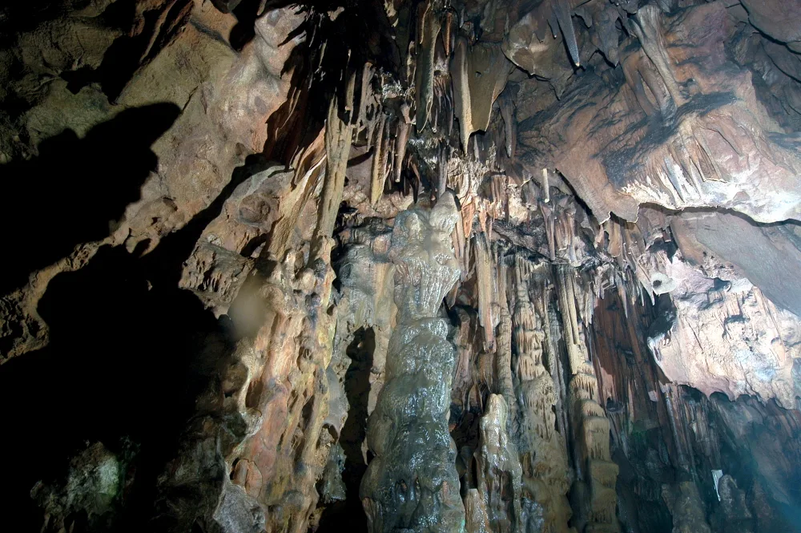
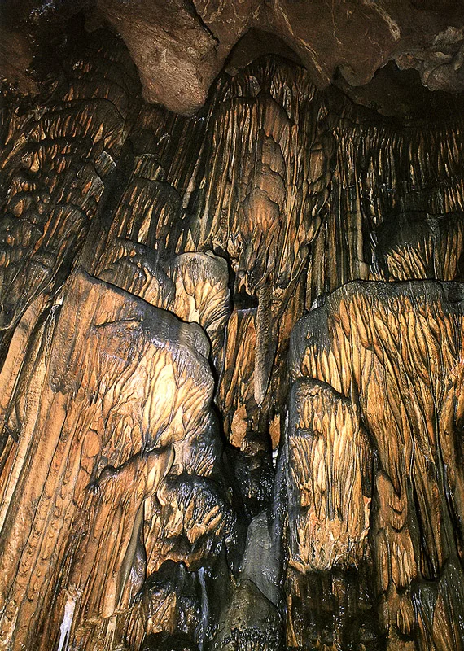
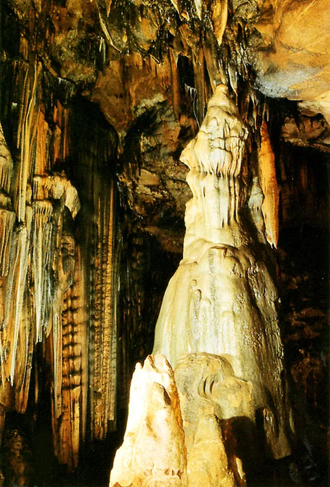
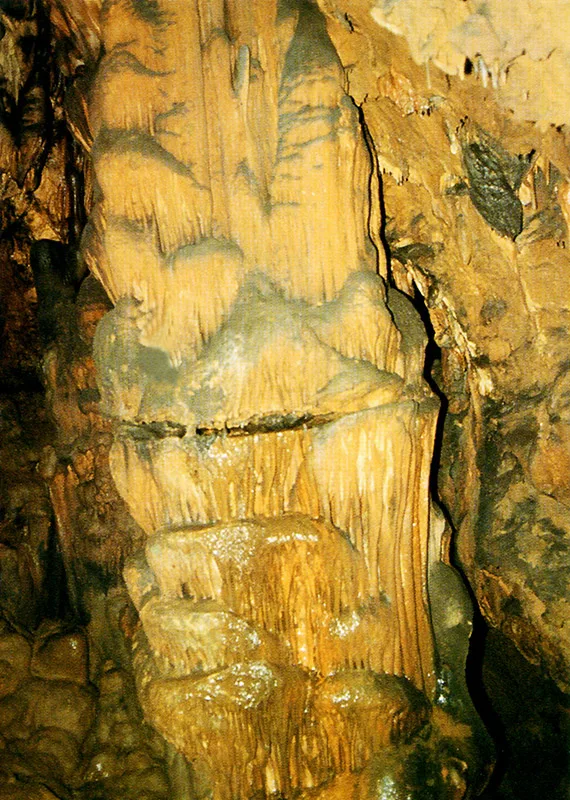
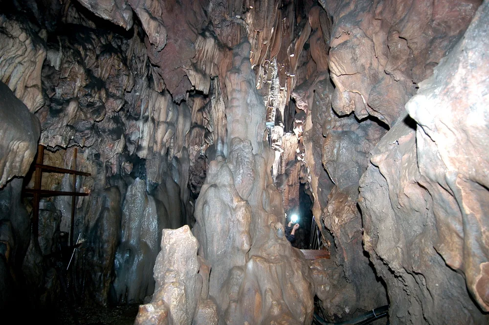
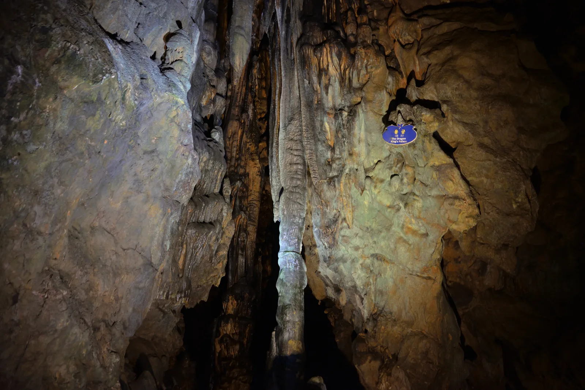
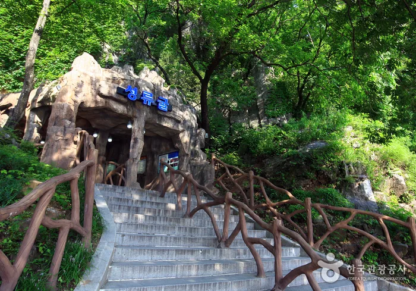

▲ 성류굴이 자리한 왕피천 계곡. 석회암 절벽 아래로 왕피천이 흐르고 강변을 따라 산책로가 이어진다
경북 울진군 근남면, 왕피천이 굽이도는 절벽 아래 성류굴(聖留窟)이 있다. 국내에 이름난 석회동굴은 여럿이지만, 국가가 가장 먼저 천연기념물로 못박은 동굴은 성류굴이다. 1963년 5월 지정번호 제155호를 받았다. 이름의 유래부터 예사롭지 않다. 신라 화랑들이 굴 속에서 노닐었다 하여 처음엔 선유굴(仙遊窟)로 불렸고, 임진왜란 때는 인근 절의 불상을 피신시켰다 하여 '불성이 머무는 굴'이라는 뜻의 지금 이름을 얻었다. 2019년에는 굴 안에서 1200여 년 전 신라 화랑이 새긴 것으로 추정되는 명문까지 발견됐다. 이 기사는 동굴의 생성 배경부터 천연기념물 지정 이유, 화랑 전설과 역사, 왕피천과의 관계, 2026년 기준 입장료·관람시간·주차 정보까지 방문 순서대로 정리했다.
1. 2억 5천만 년 전 만들어진 석회동굴 — '지하금강'

▲ 성류굴 내부. 좁은 통로 좌우로 종유석과 석순이 빽빽하게 들어차 있다 ⓒ Wikimedia Commons
성류굴은 고생대 조선누층군 지층에 형성된 석회암 동굴로, 학계에서는 약 2억 5천만 년 전부터 만들어진 것으로 본다. 전체 길이는 약 915m(수중 구간 포함)이며 이 가운데 관람이 가능한 공개 구간은 약 270m 정도다. 내부에는 9개의 넓은 광장과 깊이 4~5m에 이르는 지하 호수 3곳이 있고, 옅은 붉은빛과 회백색, 흰색이 뒤섞인 석회암이 만드는 색감이 독특하다. 기묘하게 솟은 종유석과 석순들이 마치 축소된 산수화 같다 하여 예로부터 '지하금강(地下金剛)'이라는 별칭으로도 불렸다.

▲ 천장에서 커튼처럼 흘러내린 종유벽. 물에 녹은 석회 성분이 오랜 시간 쌓여 만들어진 형태다 ⓒ Wikimedia Commons
2. 국내 첫 천연기념물 — 지정번호 제155호
성류굴은 1963년 5월 국가유산청(당시 문화재관리국)이 천연기념물 제155호로 지정한 동굴이다. 종유석·석순·석주 등 생성물이 다양하고 보존 상태가 뛰어나 지질·경관적 가치를 인정받았다. 지정 면적은 약 137,454㎡에 이르며, 소유자이자 관리자는 울진군이다. 현재는 경북동해안 국가지질공원의 한 구간으로도 포함돼, 동굴 자체의 관람뿐 아니라 주변 지형이 보여주는 지질학적 스토리도 함께 소개되고 있다.

▲ 탑처럼 솟아오른 석순. 천장에서 떨어진 물방울의 석회 성분이 바닥에 쌓여 자란 것이다 ⓒ Wikimedia Commons
3. 화랑이 놀던 굴에서 불성이 머무는 굴로 — 이름의 유래

▲ 종유석과 석순이 위아래로 맞닿아 하나의 기둥을 이룬 석주 ⓒ Wikimedia Commons
성류굴의 첫 이름은 선유굴(仙遊窟), '신선이 노니는 굴'이었다. 신라의 화랑인 영랑·술랑·남랑·안상 등이 이 굴 속에서 놀았다는 이야기가 전해지면서 붙은 이름이다. 실제로 2019년 동굴 내부 조사 중 1200여 년 전 신라시대 것으로 추정되는 명문이 발견됐는데, 임랑(林郞)·공랑(共郞) 등 화랑의 이름으로 보이는 글자가 새겨져 있어 학계의 관심을 모았다. 이는 성류굴이 단순한 자연 동굴이 아니라 당시 화랑이나 승려들의 수련 장소로도 쓰였을 가능성을 보여주는 기록으로 평가된다. 신라 진흥왕이 서기 560년 무렵 이곳을 다녀갔다는 사실도 이때 확인돼, 기존 문헌에는 없던 역사가 동굴 벽면에서 새로 드러난 셈이다.
지금의 이름인 성류굴로 바뀐 것은 임진왜란(1592년) 때다. 인근에 있던 성류사(聖留寺)라는 절이 왜군에 의해 불타 없어지자, 절에 모셔져 있던 불상들을 이 굴로 옮겨 피신시켰다고 전해진다. '불성(佛聖)이 머무르는 곳'이라는 뜻에서 성류굴이라는 이름이 굳어졌다.
4. 왕피천이 만든 지하 호수 — 자연이 겹겹이 쌓인 협곡

▲ 동굴 통로 폭과 사람 크기를 비교할 수 있는 구간. 관람로를 따라 좁은 통로와 넓은 광장이 번갈아 나타난다 ⓒ Wikimedia Commons
성류굴이 자리한 곳은 백두대간에서 흘러내린 왕피천(王避川)이 깎아 만든 협곡이다. 왕피천은 멸종위기종을 포함한 다양한 생태계가 보존돼 있어 생태·경관보전지역으로 지정된 하천이기도 하다. 동굴 안으로도 왕피천 지하수가 스며들어 깊이 4~5m에 이르는 지하 호수 3곳을 만들었는데, 잔잔한 수면에 종유석과 조명이 비치는 모습이 성류굴만의 볼거리로 꼽힌다. 동굴 밖으로 나오면 왕피천을 따라 산책로가 이어져, 석회암 절벽과 강물이 어우러진 풍경을 함께 즐길 수 있다.

▲ 굴 안에서 '용궁(龍宮)'이라는 이름이 붙은 구간. 조명에 따라 종유석 색이 다르게 드러난다 ⓒ Wikimedia Commons
5. 입장료·관람시간·주차 정보(2026년 기준)

▲ 매표소를 지나 숲길 계단을 오르면 만나는 성류굴 입구 사진=한국관광공사
성류굴 관람에는 입장료가 있다. 성인 5,000원, 군인·청소년 3,000원, 어린이 2,500원, 경로 1,000원이다. 동굴 내부 공개 구간(약 270m)을 도는 데는 40분~1시간 정도 걸리며, 주차와 주변 산책까지 포함하면 1시간 30분~2시간 정도 여유를 두는 편이 좋다. 동굴 안은 연중 서늘한 편이라 한여름에도 겉옷을 챙기는 방문객이 많다. 개방 시간은 계절에 따라 다르고, 마지막 입장은 폐장 30분 전까지 가능하다.
| 항목 | 내용 |
|---|---|
| 입장료 | 성인 5,000원 · 군인·청소년 3,000원 · 어린이 2,500원 · 경로 1,000원 |
| 관람 소요시간 | 동굴 관람 40분~1시간, 주차·산책 포함 1시간 30분~2시간 |
| 개방시간(하절기 3~10월) | 09:00~18:00, 마지막 입장 17:30 |
| 개방시간(동절기 11~2월) | 09:00~17:00, 마지막 입장 16:30 |
| 주차 | 무료주차장 운영(경북 울진군 근남면 성류굴로 199) |
| 공개 구간 길이 | 약 270m(전체 길이 약 915m, 수중 구간 포함) |
✅ 울진 성류굴, 가기 전 체크리스트
· 1963년 5월 국내 최초로 천연기념물(제155호) 지정, 약 2억 5천만 년 전 생성된 석회동굴
· 원래 이름은 선유굴(仙遊窟), 신라 화랑들이 노닐었다는 전설에서 유래
· 2019년 굴 안에서 1200여 년 전 신라 화랑 명문 발견, 진흥왕 방문 기록도 확인
· 임진왜란 때 불상을 피신시켜 '성류굴(聖留窟)'로 개칭
· 전체 길이 약 915m 중 공개 구간은 약 270m, 지하 호수 3곳·광장 9개
· 왕피천이 흘러드는 협곡에 위치, 굴 밖으로 강변 산책로 이어짐
· 입장료 성인 5,000원, 개방시간은 하절기 09:00~18:00·동절기 09:00~17:00
· 관람 소요시간은 40분~1시간, 여유 있게 보려면 1시간 30분~2시간 확보 추천